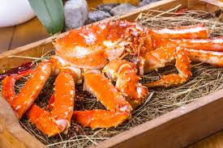

Hokkiado Crab is actually not a name of a specific kind of crab. It refers to several types of crabs you can find in Hokkaido, Japan, a place very famous for seafood, especially crabs. There are 4 main kinds of Hokkaido Crabs. We'll introduce them below as well as the season for having them.

When you visit Hokkaido and are looking for a restaurant to enjoy some delicious "Hokkaido Crabs", "Sapporo Kanihonke" is a perfect choice. Sapporo Kanihonke is a famous traditional crab-specialized restaurant founded in 1971 in Sapporo.
At Sapporo Kanihonke you have a chance to enjoy "Kanisuki" and "Kanishabu" (both are nabe, or hot pot, style dishes). You also get to enjoy crabs raw, boiled, and grilled.
On average, the price for a Hokkaido crab meal is 6,000 to 8,000 yen per person.
Here is a video of King Crab